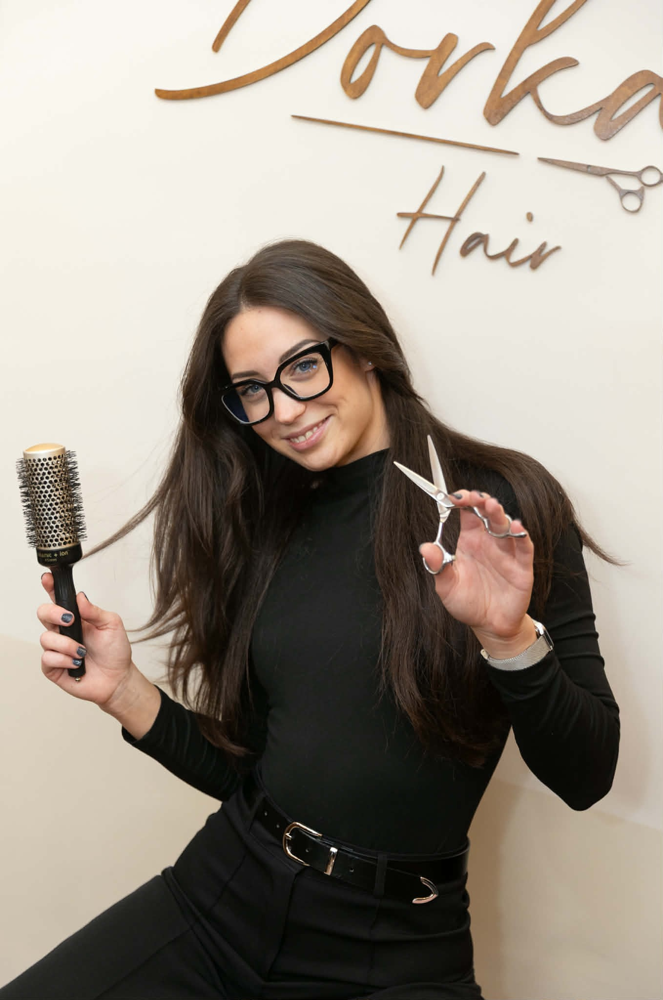

A történetem
Szenvedély, szakértelem és a haj iránti alázat.

Több mint szakma: hivatás
Dorka vagyok, a Dorka Hair alapítója és vezető fodrásza. Már kislány koromban is lenyűgözött a szépségipar világa, de az igazi szerelem akkor kezdődött, amikor először láttam, hogyan adhat egy jól eltalált frizura teljesen új önbizalmat valakinek.
2023-ban nyitottam meg saját szalonomat Zamárdiban, azzal a céllal, hogy egy olyan helyet hozzak létre, ahol a minőség és a vendégközpontúság találkozik. A folyamatos fejlődést elengedhetetlennek tartom.
Számomra a legfontosabb, hogy könnyen kezelhető, divatos frizurákat készítsek neked. Modern hajvágási és színezési technikákat alkalmazok, mindig figyelembe véve az egyéniségedet és a hajad textúráját. A tökéletes hajszínt professzionális JOICO termékek használatával érem el, melyek az ápolás terén is a legkiválóbb eredményt biztosítják.
Rendszeresen részt veszek szakmai képzéseken, mert hiszem, hogy ebben a szakmában sosem lehet megállni. Elkötelezett vagyok a haj egészségének megőrzése mellett: nálam nemcsak szép, de egészséges is lesz a hajad. Elegáns és fiatalos környezetben várlak benneteket Zamárdi szívében!
Időpontot kérek